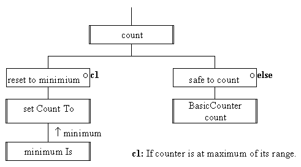

This action is specified to count upto the
maximum limit of the counter and then rollover to the minimum
limit. This requires a two way selection which can be represented
on a JSP schematic as follows.

This can be implemented as follows:
0021 public void count(){
0022 if ( this.isAtMaximum()) {
0023 this.setCountTo( this.minimumIs());
0024 } else {
0025 super.count();
0026 } // End if.
0027 } // End count.
Line 0025 is crucial if it is mis-implemented, either as count() or as this.count(), it will result in infinite recursion. The use of this in the previous lines is technically not required but should be included to emphasise that these actions are associated with an instance (the current instance), and that the actions have been inherited and thus 'belong' to the instance. The use of super should be restricted to places where it is needed to designate an overridden action rather than to indicate inheritance.